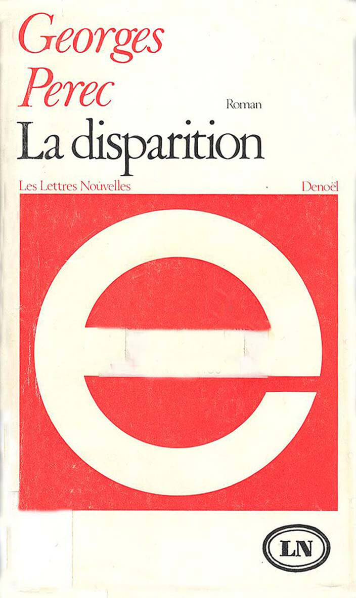

L’univers des contraintes :
Les contraintes sont des limites particulières qu’il est impératif de respecter. Elles nous permettent de nous adapter aux besoins de chaque personne. Dans notre domaine, elles nous montrent la voie à suivre pour faciliter l’utilisation de nos créations afin qu’elles puissent être utilisées par tout le monde, pas par la majorité de la population, mais par toute la population. La majorité, comme nous aimons le croire, est des personnes dites « normales », sans handicaps* ou sans limites d’utilisation* avec leurs appareils. Personne ne se préoccupe des utilisateurs qui ont un vieil appareil ou des personnes ayant des soucis de santé ne permettant pas une utilisation « générique »de nos créations. Sachant qu’officiellement 15 % de la population mondiale est handicapée, nous ne devrions pas les mettre de côté.
“ Write them off and say things like, Oh, disability, no;, we don’t develop for them and really they don’t buy our products. […] It is thinking reductionist, ableist, and it’s severely restricted, because, when we ignore those constraints, they still exist. And we just simply end up hurting our users. ”
Notre force devrait résider dans le fait que nos créations soient simples et adaptées à chacun, nous ne devrions pas rechercher la complexité et fermer les yeux sur des problèmes qui nous demanderait un peu plus de travail pour y palier. Nous sommes devenus fainéants et élitistes alors que notre travail devrait être accessible au monde entier sans faire de discrimination par rapport aux soucis de santé, à la connexion internet ou au modèle d’appareil que les gens utilisent. Le seul moyen de redorer notre image et d’arriver à faire de nos créations un ouvrage universel est d’écouter et prendre en compte chaque contrainte que nous croisons pour sublimer notre travail.
Nous connaissons tous des chef-d’oeuvre réalisés à partir de contraintes. Elles donnent des défis et nous forcent à faire preuve de créativité. Elles sont parfois obligatoires mais beaucoup d’artiste se sont imposés des contraintes par pur amusement leur permettant de dépasser leurs propres limites.
“ A constraint didn’t limit, it produced more, it produced more beauty out of it. ”
Une des oeuvres les plus connues ayant une contrainte très ciblée et compliquée à respecter est “La Disparition” de Georges Perec. Ce roman de 300 pages ne comporte pas une seule fois la lettre «e », la lettre la plus utilisée dans la langue française. Ce roman démontre qu’avec certaines contraintes, il est tout à fait possible de créer un ouvrage exceptionnel.
Dans l’expérience du professeur Mihaly Csikszentmihalyi, 2 groupes d’étudiant en art ont été formé. Pour le premier groupe, le professeur a donné une toile vierge et pour le second, une toile avec un petit gribouilli. L’instruction était cependant la même : «Partez et créez-moi quelque chose de magnifique ! ». L’expérience a été menée plusieurs fois avec des groupes et des étudiants différents et a toujours démontré que le second groupe, celui avec un dessin de base sur la toile, avait créé un tableau plus créatif et merveilleux que les autres.
Finalement, nous retrouvons aussi des contraintes qui permettent de créer des scènes fantastiques dans le monde du théâtre avec les matchs d’improvisation * où les comédiens doivent imaginer une scène en 2 minutes avec un temps, un sujet et le nombre de joueurs. Malgré la difficulté, ils arrivent toujours à relever le défi imposé par l’équipe adverse.
Les innovations ne viennent pas sans contraintes, c’est en les utilisant et en les mettant en avant que nous pouvons créer de véritable chef-d’œuvre d’ingénierie permettant à tous à chacun d’utiliser comme bon lui semble les sites et autres applications que nous créons.
Pour résumer : les contraintes nous permettent de créer avec plus d’ingéniosité et de créativité et elles nous sont nécessaires pour convenir au plus de personnes possibles.
Exemples de handicaps :
- Un daltonien * ne parviendra peut-être pas à lire un texte à cause de sa couleur rouge/orange sur un fond vert.
- Pourquoi ne créeriez-vous pas un paramètre permettant de changer une de ces 2 couleurs pour permettre au daltonien de lire votre contenu ?
- Une personne dyslexique * a besoin qu’on lise votre contenu pour y avoir accès.
- Pourquoi ne pas permettre d’agrandir les espaces entre les mots et les caractères pour les aider à naviguer sur votre site internet ou votre application avec indépendance ?
- Une personne ayant un parkinson léger * ne maîtrise plus précisément ses gestes et peut avoir de grandes difficultés à cliquer sur une zone d’interaction.
- Une zone d’interaction plus grande pour naviguer sur un site internet ou une application ou permettre de changer l’interface de votre travail avec un paramètre.
Exemples de problèmes techniques :
- Des personnes possédant des appareils ne pouvant pas charger le JavaScript * . Ces personnes ne peuvent donc pas accéder à toutes les fonctionnalités du site.
- Il faudrait donc une version de votre site qui ne l’utilise pas ou mettre un message d’erreur signalant que l’appareil que cette personne possède ne peut pas lire correctement le site.
- Les connexions internet peuvent être médiocres et peuvent donc empêcher le bon chargement du site.
- Diminuer le poids de notre site web ou de notre application avec des images de moins haute qualité ou en supprimant les animations superficielles.
- Les navigateurs internet que les personnes utilisent. Certains vont sur Google Chrome, d’autres surfent sur Safari ou certains sur Mozilla Firefox, etc. En fonction des navigateurs, votre site web peut changer et certaines fonctionnalités disponibles sur l’un sont absentes sur d’autres.
- Vous devriez pouvoir créer un site disponible sur tous les navigateurs.
Biographie de la conférencière :
Charlie Owen est une femme de 40 ans, elle a travaillé comme développeur à Londres, professeur de VLE (Virtual Learning Environnement) et après avoir écrit du code pour la première page de BBC News, elle travaille maintenant comme FED (Front-end Designer) principale pour Springer Nature à Berlin. Dans cette société, elle contribue à rendre le monde de l’édition scientifique en un endroit plus agréable. Elle aide d’autres développeur à devenir meilleurs, elle frappe sur le design inclusif et utilise ces normes pour rendre le web merveilleux.
L’avis des rédacteurs :
Auréliane :
Sa conférence est une vrai leçon de vie. Trop de gens ont tendance à généraliser un cas comme par exemple ; les mals voyants n’utilisent pas mon site »alors qu’au contraire, ils pourraient être intéressés. Elle nous apprend à prendre conscience des différences de chacun et que donc on doit penser à tout le monde en créant nos site. Ayant moi-même des problèmes de vue assez élevés, je me rends compte que certains me sont plus compliqué que d’autres à lire voire parfois impossible.
Marie :
Je n’ai jamais été contre les contraintes. En réalité, je les préfère à la liberté totale. Elles me permettent de me structurer et de me voir avancer dans mon travail. Tout naturellement, je suis d’accord avec Charlie Owen quand elle nous dit qu’elles ne doivent pas être négligées et qu’elles nous permettent de mieux travailler et de devenir de meilleurs créateurs en repoussant nos limites. Je suis aussi du même avis qu’elle lorsque Charlie Owen nous parle de nos créations inadaptées, inaccessibles à certaines personnes et je la suis quand elle nous dit que nous devrions nous adapter à tout le monde et à tous les appareils. Je suis pour une restructuration de notre mode de vie, de notre façon de penser. Revenir aux sources et aux fondamentaux pour recommencer sur de meilleures bases.
Néanmoins, la conférence était un peu vide de contenu. La conférencière nous a tenu 45 minutes alors qu’elle pouvait tout nous dire en 5. Charlie Owen se répète beaucoup et, en début de conférence, nous tiens une histoire de cake durant 10 minutes pour essayer de donner un exemple compréhensible par tout le monde. C’était une conférence redondante malgré que le sujet soit intéressant, dommage.
Guillaume :
J’ai trouvé la conférence très intéressante, certes un peu courte… Le sujet, les contraintes, est un sujet très large, et Charlie Owen développe très bien les aspects de les utiliser dans la vie de tous les jours, ainsi que dans le web Il est aussi très clair que nous devrions penser un peu plus à la globalité des personnes qui utilisent nos sites. Nous ne prenons pas toujours en considération les différentes problématiques techniques ou handicapantes d’une personne. Cette conférence donne à réfléchir !
Camille :
J’ai trouvé cette conférence intéressante, dans le sens où on essaye constamment de détourner les contraintes que l’on rencontre alors qu’elles sont bénéfiques à la mise en création. Bien que cette conférence soit assez répétitive sur le message de base qu’elle véhicule, elle énonce certains exemples pertinents et mettant ainsi le doigt sur une problématique bien réelle, celle de l’évolution bien trop rapide des techniques alors que l’utilisateur moyen ne peut pas forcément se permettre de telles dépenses. Cela permet aussi, de se rendre compte qu’il est impératif de changer notre façon de créer du design pour qu’il soit visible et compréhensible par tous.
Je dirais pour finir, qu’elle met quand même la lumière sur des points importants que l’on préfère ignorer en général peut-être aussi par facilité, ce qui permet de commencer d’une remise en question sur notre façon de travailler et de se rendre compte que l’utilisateur est d’abord un être humain à part entière.
Lexique
- Front-End Manager : Chef de service, gestionnaire d’une équipe de développeurs web
- Springer Nature : Société d’édition universitaire
- Beyond Tellerrand : Série de conférences consacrée à la conception du web, de la créativité et du design
- Handicap : Ici, le daltonisme, une mauvaise vue, épilepsie, …
- Limite d’utilisation : Vieil appareil, mauvaise connexion internet, taille d’écran, …
- Daltonisme : Anomalie de la perception des couleurs
- Dyslexie : Trouble de la lecture et de l’écriture
- Parkinson léger : Maladie affectant le système nerveux et entraînant des tremblements, notamment dans les mains
- JavaScript : Langage de programmation pour les pages web interactives
- Match d’improvisation : Compétition théâtrale entre 2 équipes de comédiens où le public est juge et où les contraintes imposées viennent de l’équipe adverse (thème, temps, nombre de comédien)
Sources
- Le site de Charlie Owen
- Le site de Paris Web parlant de Charlie Owen
- Le site de State of the Browser parlant de Charlie Owen
- Informations sur la conférence de Charlie Owen
- Informations sur le professeur Mihaly Csikszentmihalyi
- Le livre « La Disparition » de Georges Perec
- Test d’Ishihara
- Site de Beyond Tellerrand